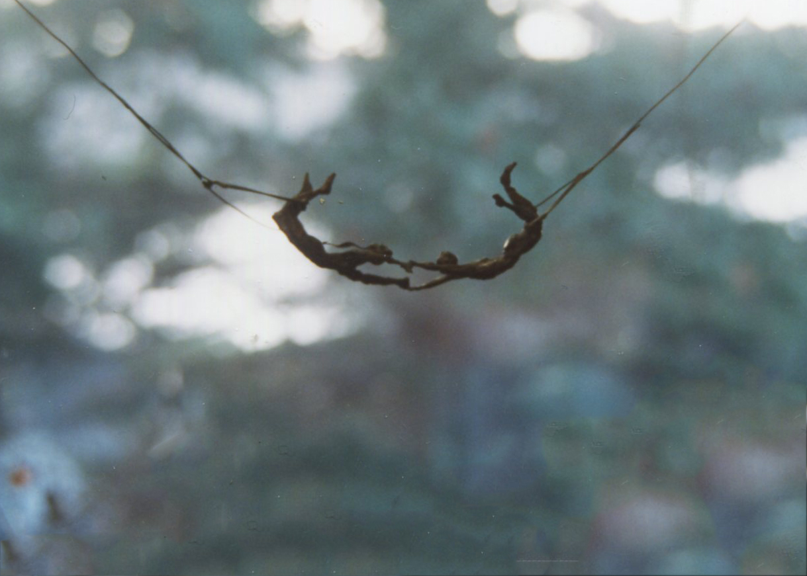
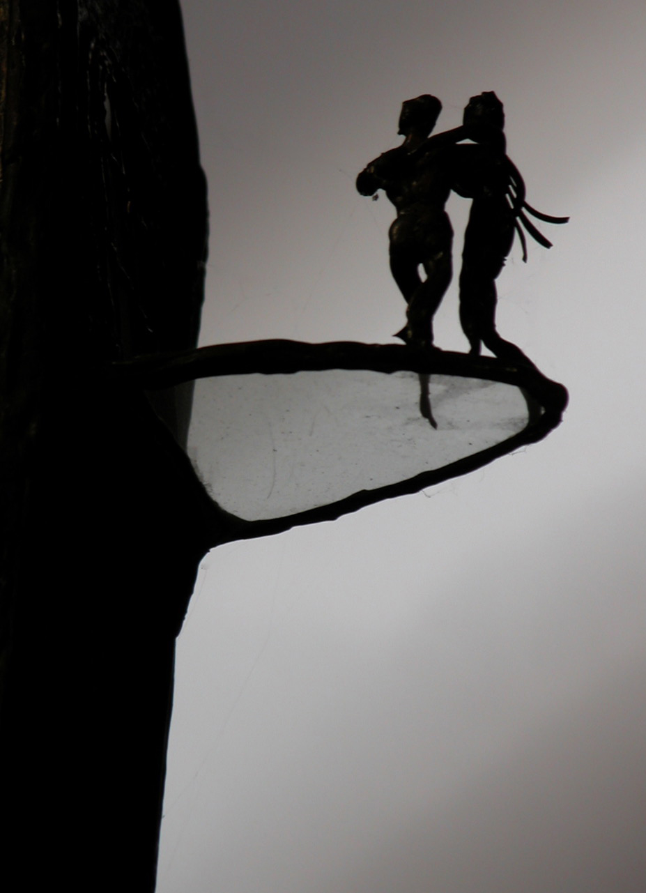
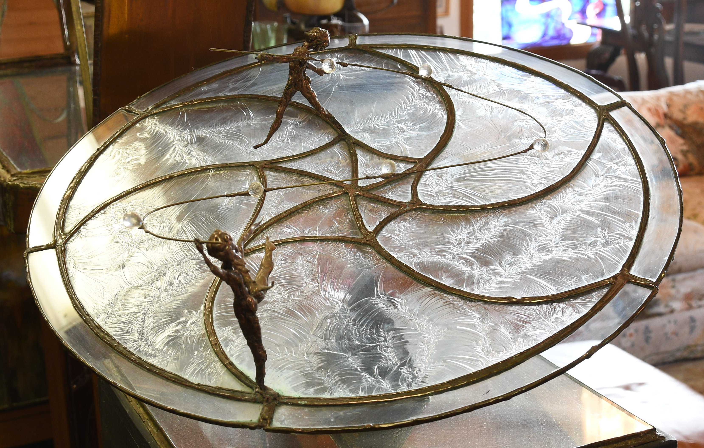

Trapeze Artists
Aerial lovers,
each swinging from a bar opposite,
carving an arc
through the smoky air
toward one another
Above an audience
swelling with fearful
anticipation
that they may miss
or fall
During their dark, airborn excursion
toward a loving union.
Two hands grasp, intertwined
for a moment
until the inertial pull
parts them into a reverse
Arc traveling
in the time we all missed,
and we stand again on our
solo platforms on poles
in space
With tears in our eyes
as we watch the
figure in repose,
beyond our reach.
There was that singular moment
in time, when we
met beneath a tent
of stars,
And heard the applause
echoing in our ears
As the dopplerized murmur
of discontent receded
into the oblivion of
lost love in the universe.
There is no other hand to hold.
So we are alone
as we reach for air
and imagine it contains her hand
and imagine we hold her hand,
in the space we now hold.
We fall through the murderous night
which announces so clearly
That love can only be held
for a moment,
and something else
takes its place
Which is eternally the shadow dream
which can never be made lucid,
since lucidity would waken us
from the dream of love
which never leaves us,
Trapeze artists that we are.
Saul Spiro, 12/1989

Staring at the Sun - Trapeze Artists 1989
Love
Black, solid basaltic
walls of stone
dominate Earth’s
human landscape.
A sea of impenetrable
rock obscures the
slightest wrinkle.
Then from the hard inner
silence and density,
Love explodes
through gates which
open a hole in the
cliffside above any valley,
Onto a transparent
balcony of glass.
We dance
while the musicians
in the crystal ballroom
play some Russian
concerto.
And nothing in this
flinty landscape of
tortuous history and
bloody flowers, picked
and strewn for centuries
past, seems so real
As it does the moment after,
and through the eons
to come.
So we know Love.
Love bursts all bonds
of constraint in this
incredibly empty
landscape:
Brief as life---
Fetching as the new moon
large and bright on
the evening horizon---
Touching as wild mustangs
nuzzling.
We are all in free fall
through a starry night,
embracing our partner
as the cold air rushes
by and Earth suddenly
looms hard and
conclusively.
And yet, even as this
brief journey, lit by
the candlelight of love
and sheltered by our
hands from the wind,
Moves towards its end,
we purse our lips---
and blow out the
frail flame.
As if the end were not enough,
we create our own darkness
and carry it with us.
Fetching as a new moon
my love returns.
My love is you.
Saul Spiro, 02/1990

Love, 1988
Journey to similar destinations
Like two singers
who only glance at one another,
creating a melody toward the stars
in perfect harmony----
we are acrobats balanced
on lines in space leading toward
two planets of origin and departure,
two acrobats on opposite sides
of their universe,
pursuing their own lonely routes
in space, inching toward the same
two spheres from opposite directions.
We follow a similar configuration of pathways
leading toward a common place,
but with no overlap whatsoever,
and only a window of conjoint memory
through which we may glimpse
some image of each other
lending inspiration to our mutual quest.
We are never closer to reality
than our dreams----
never farther than the failure
to implement our choices,
or to imagine that the acrobat’s
balancing pole is dependent on
anyone else’s skills to stay the route;
or worse still, to imagine
that mundane, fateful lurchings do anything
other than compromise destiny’s
quest.
We are like two singers casting a melody
toward the stars in perfect harmony.
Saul Spiro, 01/2004

Couples, 1990
Rapprochment
Love is two overlapping circles
turning in search of rapprochment
while dreaming of a hidden
mandorla,
and waking fitfully to the nightmare
of reality.
Love is union without conjunction,
acquisition without search,
a bottomless well without water .......
a well of conspiration, sincerity
and regret;
of mandorlas of inspiration beyond
foolishness, stupidity,
and fragmented belief.
Love is a dream without an interpreter,
nor the wakefulness which renders
dreaming obsolete.
It is the rapprochment
which grants breath
to mandorlas sailing
in cumulous clouds before the rain.
Breath and tears before the rain.
Saul Spiro, 05/2010
Dedicated to Amy, my first wife, who died, a suicide, over 35 years ago.
Mandorla, 2010
For Carrol
We drive across empty plains
under an empty sky
whose stars are hidden
in the sunlit, celestial
closet overhead
Ephermeral dust-devils gust
up dun-colored slopes
here and there for moments
of dervish reality.
We watch the narrowing arcs
of pendulums gone silent
and the stilled hands upon
sad faces of time.
Soft shadows of mauve
and filemot roll across
hillsides in the afternoon
twilight where the sun had
burned hot and brightly.
A handful of seagulls lands
briefly upon a black tarmac
beneath the currents of
infinite air.
Reflections of poplars
sail silently in a quiet
section of a damned-up river
draining half a continent
of its life-giving essence
flowing on like love
without end.
I realize again how much you,
Carroll, are the anchor point
holding me safely in one calm
harbor of a hollowing world,
and I want you to hear
my whispers of love above
and beyond the brass gongs
and hammered anvils of the
foolish storms of daily
scrum.
I can but cast crumbs
in the snow beneath the
stark branches
upon which our love perches
like some exquisite, fragile
bird,
and hope it will endure
many more winters filled
with the gentle warble
of its song.